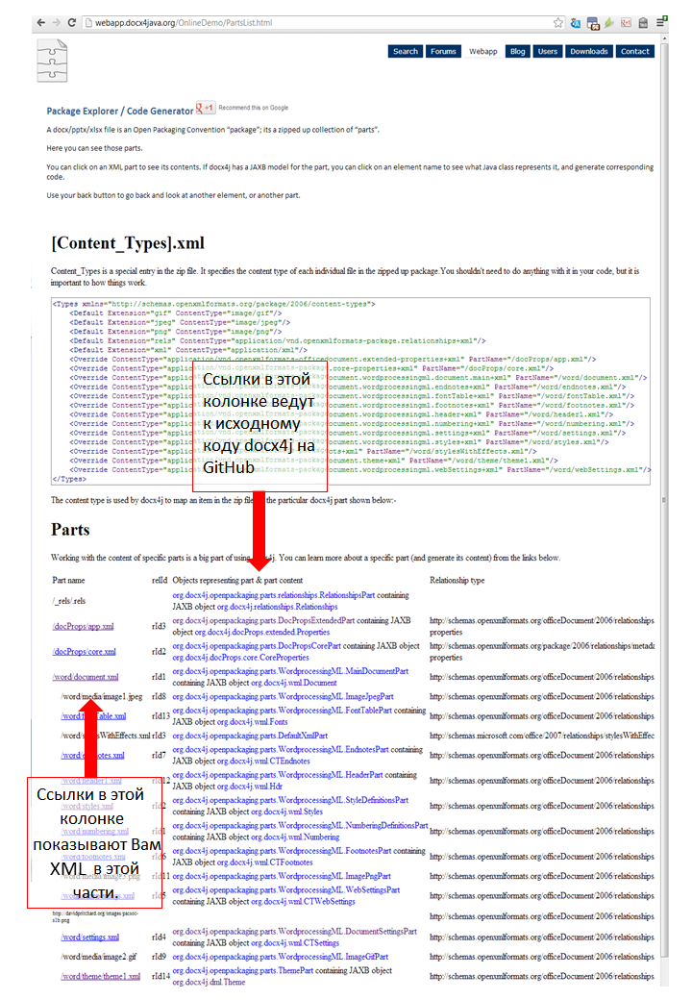
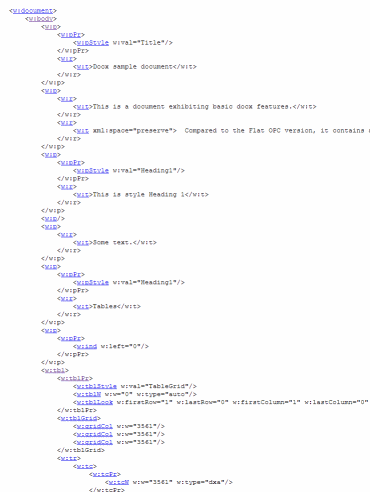
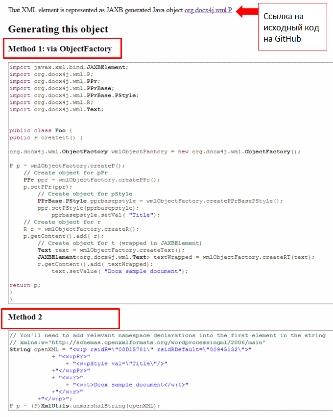

Docx4j – Начало Работы
Введение в docx4j
docx4j – это библиотека для работы с файлами формата docx, pptx и xlsx с использованием Java. По существу данная библиотека может распаковать «пакет» docx (или pptx/xlsx) и разобрать XML, чтобы создать представление в памяти Java, используя дружественные классы разработки (в противоположность к DOM и SAX).
В целом эта библиотека схожа со средствами разработки Microsoft's OpenXML SDK для .NET.
Сила docx4j в том, что его представление в памяти использует JAXB – стандарт JCP для связывания Java и XML. В этом отношении программа Aspose похожа на docx4j. В отличие от docx4j средства Apache POI используют XML Beans.
docx4j является библиотекой с открытым исходным кодом доступной по лицензии Apache License (v2). Как проект с открытым исходным кодом docx4j в основном улучшался за счёт вклада различных разработчиков (смотри список авторов в README или POM файле). Дальнейшие вклады в разработку всегда приветствуются. Пожалуйста, смотрите форум docx4j http://www.docx4java.org/forums/ для деталей.
Проект docx4j спонсируется организацией Plutext (www.plutext.com).
Введение в Open XML
Согласно спецификации Microsoft Open Packaging каждый документ docx сделан из числа файлов «Частей», которые запакованы в один архив.
Чтобы понять это, проще всего распаковать файл формата docx/pptx/xlsx, используя Ваш любимый архиватор. А ещё проще посетить страницу http://webapp.docx4java.org и исследовать Ваш файл, используя “PartsList”. Вы также можете сгенерировать код таким же образом.
Часть документа (ЧД) – это обычно XML, но не обязательно (часть-картинка, к примеру, не является XML).
Части документа составляют дерево. Если ЧД имеет частей-детей, то должна быть ЧД взаимосвязей, которая определяет это.
Часть документа, которая содержит основной текст, является Основной Частью Документа (Main Document Part). Каждая ЧД имеет имя. Обычно имя Основной Части Документа это "/word/document.xml".
Если у документа есть колонтитул, то основная часть документа будет иметь потомственную ЧД колонтитул и это будет описано в части взаимосвязей основной части документа.
Аналогично для любых картинок. Чтобы посмотреть структуру любого документа, загрузите его на веб-приложение по ссылке the PartsList webapp, или запустите пример "Parts List" (смотрите далее).
Введение в WordML выходит за рамки этого документа. Более подробно можно почитать в статье по ссылке http://compress.ru/Archive/CP/2006/6/116/.
Англоязычные ресурсы: http://www.ecma-international.org/publications/standards/Ecma-376.htm (http://www.ecma-international.org/news/TC45_current_work/TC45_available_docs.htm), "Open XML Explained" ebook.
Онлайн генерация кода
Онлайн генерация находится по ссылке http://webapp.docx4java.org.
Есть несколько вещей, которые Вы можете сделать уже прямо сейчас:
• Исследовать Ваш документ docx/pptx/xlsx или его представление в docx4j
• Конвертировать docx в PDF или XSL FO
• Объединить файлы docx (к примеру, обложка письма и контракт) в один файл docx, используя Plutext расширение MergeDocx. Аналогично те же действия для файлов pptx, используя MergePptx.
Хотелось бы обратить внимание на первый пункт из списка выше.
После того как Вы загрузили Ваш документ docx/pptx/xlsx, первое что Вы увидите, будет прямо как в примере PartsList:

Далее можно нажать на колонку слева, чтобы увидеть главную часть документа document.xml.
После нажатия можно увидеть XML:

Там без сюрпризов.
Но обратите внимание на ссылки. Нажимаем на первый элемент w:p.
Получаем исходный код Java, который создаёт полную структуру:

Как Вы можете видеть на картинке выше, оба стиля кода создаются для Вас. В любом случае, Вы можете скопировать/вставить код в IDE (Eclipse или другую среду разработки) и просто запустить его!
Чтобы действительно увидеть созданный объект в документе Офиса, Вам всё-таки необходимо будет добавить созданный объект к части документа.
Установка
Использование Maven
Проект docx4j доступен в центральном репозитории Maven. Это даёт возможность для пользователей Maven начать работу с docx4j действительно просто.
С использованием Eclipse и установленного плагина m2eclipse Вы просто добавляете docx4j и всё. Нет необходимости в сложных манипуляциях с ручной установкой jar-библиотек, путей классов и прочего.
Запись в блоге hello-maven-central рассказывает о том, что делать, начиная со свежей ОС (используется Windows 7, но эти шаги также приведут к результату и на OSX и на Linux).
Использование библиотеки
Если Maven не для Вас, Вы можете скачать последнюю версию docx4j по ссылке http://www.docx4java.org/docx4j/
В общем, мы предлагаем для разработки использовать текущую ночную сборку, так как последняя формальная выпущенная версия может отставать на несколько месяцев.
Поддерживаемые jar библиотеки размещены в .tar.gz или zip файлах, а также в соответствующей подпапке.
Основные операции
Открытие существующего документа
org.docx4j.openpackaging.packages.WordprocessingMLPackage представляет документ docx.
Чтобы загрузить документ или файл “Flat OPC” XML, достаточно вызвать одну функцию:
WordprocessingMLPackage wordMLPackage =
WordprocessingMLPackage.load(new java.io.File(inputfilepath));
В docx4j 3.0 Вы можете использовать фасад:
WordprocessingMLPackage wordMLPackage =
Docx4J.load(new java.io.File(inputfilepath));
Он делает то же самое, скрывая детали.
Для загрузки из входящего потока используются аналогичные сигнатуры.
Вы можете получить главную часть документа (word/document.xml):
MainDocumentPart documentPart = wordMLPackage.getMainDocumentPart();
После этого Вы можете манипулировать с его содержимым.
Похожий подход используется при работе с файлами pptx:
PresentationMLPackage presentationMLPackage =
(PresentationMLPackage)OpcPackage.load(new java.io.File(inputfilepath));
И аналогично для файлов xlsx.
Создание нового документа
Чтобы создать новый документ docx:
// Создать пакет
WordprocessingMLPackage wordMLPackage = WordprocessingMLPackage.createPackage();
// Сохранить его
wordMLPackage.save(new java.io.File("helloworld.docx") );
И это всё.
Метод createPackage() очень удобный, потому что он делает следующее:
// Создать пакет
WordprocessingMLPackage wordMLPackage = new WordprocessingMLPackage();
// Создать главную часть документа (word/document.xml)
MainDocumentPart wordDocumentPart = new MainDocumentPart();
// Создать содержимое главной части документа
ObjectFactory factory = Context.getWmlObjectFactory();
org.docx4j.wml.Body body = factory .createBody();
org.docx4j.wml.Document wmlDocumentEl = factory .createDocument();
wmlDocumentEl.setBody(body);
// Разместить содержимое в основной части
wordDocumentPart.setJaxbElement(wmlDocumentEl);
// Добавить основную часть в часть связей
// (создание её если необходимо)
wmlPack.addTargetPart(wordDocumentPart);
Поиск с помощью TraversalUtil
Файл OpenMainDocumentAndTraverse.java в папке примеров показывает, как проходить по JAXB представлению документа docx.
Данный подход является альтернативой XSLT, который не требует маршаллирования в документ DOM и потом обратно.
Пример использует TraversalUtil, который является главным подходом к прохождению по дереву объектов JAXB в основной части документа. Метод может быть также применён к верхним или нижним колонтитулам и т.п. TraversalUtil имеет интерфейс interface Callback, который используется для указания каким образом проходить узлы и что с ними делать.
Многие объекты (например, тело документа, параграф, поток) имеют список с их содержимым. Проход работает с помощью итерации по этим спискам.
Прохождение является очень полезным средством для нахождения и изменения частей документа.
К примеру, прохождение используется в docx4j 2.8.0, чтобы обеспечить способ создания HTML файлов без использования XSLT/Xalan.
Пакет org.docx4j.finders содержит классы, которые предоставляют удобный способ для нахождения различных объектов.
Часто это даже лучше, чем использование XPath (так как XPath имеет ограничения в эталонной реализации JAXB).
Также в пакете package org.docx4j.utils:
/**
* Используйте, если есть только единственный тип объекта (например, только P),
* с которым Вы хотите что-либо сделать.
public class SingleTraversalUtilVisitorCallback
ImageConvertEmbeddedToLinked пример содержит вариант использования описанного выше.
/**
* Используйте, если имеется более одного типа объекта (например, таблицы и параграфы),
* с которыми Вы хотите что-либо сделать при обходе.
public class CompoundTraversalUtilVisitorCallback
Преобразование с помощью docx4j
docx в (X)HTML
docx4j может конвертировать docx в HTML или XHTML. При этом генерируемый HTML получается чистым (в отличие от того HTML, который производит Word).
Преобразование в HTML с помощью docx4j может быть применено для документов, которые содержат параграфы, таблицы и картинки. Оно не справляется с более экзотичными вещами как уравнения, SmartArt или WordArt (DrawingML или VML).
В интернете Вы можете найти XSLT преобразование, которое конвертирует docx в HTML. Однако это преобразование очень сложное, так как оно должно извлекать эффективное форматирование из иерархии.
Для сравнения в docx4j эта логика реализована в Java. В результате XSLT преобразование в docx4j очень простое (функции расширения XSLT для Java делают эту тяжелую работу).
В docx4j Вы можете получить результат, используя XSLT или проходя по документу в Java. Фасад позволяет Вам выбрать, что делать:
//Применять экспортер, который использует xsl трансформацию
Docx4J.toHTML(htmlSettings, os, Docx4J.FLAG_EXPORT_PREFER_XSL);
//Применять экспортер, который не использует xsl трансформацию (= использует инспектор)
// Docx4J.toHTML(htmlSettings, os, Docx4J.FLAG_EXPORT_PREFER_NONXSL);
Смотрите пример на GitHub по ссылке src/samples/docx4j/org/docx4j/samples/ConvertOutHtml.java.
Если вывод в лог включен, то всё что не выполнено, будет видно в выходном документе. Если не включен уровень вывода для отладки, то неподдерживаемые элементы будут молча опущены.
docx в PDF
docx4j создаёт XSL FO, который может быть использован для создания PDF.
Вы можете попробовать это преобразование с помощью онлайн демонстрации по адресу http://webapp.docx4java.org/OnlineDemo/docx_to_pdf_fop.html
В общем, преобразование в PDF с помощью docx4j может быть применено для документов, которые содержат параграфы, таблицы и картинки. Оно не справляется с более экзотичными вещами как уравнения, SmartArt или WordArt (DrawingML или VML).
В настоящее время Apache FOP совмещен с docx4j для создания PDF.
Смотрите пример на GitHub по ссылке src/samples/docx4j/org/docx4j/samples/ConvertOutPDF.java.
Если вывод в лог включен, то всё что не выполнено, будет видно в выходном документе. Если не включен уровень вывода для отладки, то неподдерживаемые элементы будут молча опущены.
Импорт XHTML
Начиная с версии 2.8.0, docx4j может конвертировать содержимое XHTML (параграфы, таблицы, картинки) в родной язык WordML с почти тем же самым форматированием. Если Вы собираетесь использовать это, крайне рекомендуется применять версию 3.
Смотрите примеры на https://github.com/plutext/docx4j-ImportXHTML/tree/master/src/samples
Новое в версии 3
Библиотека docx4j 3.0 содержит много изменений больших и маленьких. Вот наиболее заметные (смотрите лог изменения для остальных).
slf4j вместо log4j
Начиная с версии 3, docx4j использует slf4j.
Для работы с docx4j Вам необходимо добавить slf4j в путь к классу. Как написано на сайте slf4j:
Простой Фасад Логирования для Java (SLF4J) выступает как простой фасад или абстракция для различных фрэймфорков логирования (к примеру, java.util.logging, logback, log4j), позволяя конечному пользователю подключить желаемый фрэймворк логирования во время развёртывания продукта.
Таким образом, необходимо, чтобы jar файл slf4j api был добавлен в путь к классу:
<dependency>
<groupId>org.slf4j</groupId>
<artifactId>slf4j-api</artifactId>
<version>1.7.5</version>
</dependency>
Если Вы хотите использовать log4j, тогда добавьте его:
<dependency>
<groupId>org.slf4j</groupId>
<artifactId>slf4j-log4j12</artifactId>
<version>1.7.5</version>
</dependency>
Импорт XHTML
Начиная с версии 3, функциональность импорта XHTML является отдельным проектом на GitHub.
Причина переноса в отдельный проект заключается в зависимости Maven – Flying Saucer, который лицензируется по LGPL v2.1 (в отличие от лицензии ASL v2, которая используется другими зависимостями docx4j).
Если Вы хотите использовать эту функциональность, Вам необходимо добавить эти jar файлы в путь к классу.
Фасад docx4j
Версия 3.0 содержит фасад, который обеспечивает чистый доступ к типичным использованиям docx4j:
• загрузка документа
• сохранение документа
• связывание XML с контролем содержимого в документе
• экспорт документа (в HTML, PDF и другие форматы, поддерживаемые рендерером FO).
Применение загрузки и сохранения документа с помощью фасада можно посмотреть в примере OpenAndSaveRoundTripTest.java.
Посмотреть, как используется фасад для вызова экспорта документов можно в примерах ConvertOutHtml.java и ConvertOutPDF.java.
MOXy
docx4j использует JAXB для маршаллирования XML частей в docx/pptx/xlsx и обратной процедуры.
JAXB включен в набор Sun Java 6, но не в 1.5. Так что если Вы используете 1.5 JDK, Вам необходимо будет добавить JAXB 2.1.x в путь к классу.
Вы так же можете использовать ссылку на реализацию JAXB (к примеру, v2.2.4). Если Вы хотите использовать такую реализацию вместо версии, включенной в JDK, делайте это с помощью механизма поддерживаемого каталога (endorsed directory mechanism).
В docx4j 3.0 же Вы можете выбрать EclipseLink MOXy для использования вместо этого. Чтобы это сделать, просто включите docx4j-MOXy-JAXBContext-3.0.0.jar и jar файлы MOXy в путь к классу.
Примеры кода
Примеры docx4j переехали на адрес src/samples.
Коммерческие расширения
В принципе, свободно скачиваемая библиотека docx4j с открытым исходным кодом не накладывает никаких ограничений на то, что Вы можете сделать с её помощью, кроме тех накладываемых лицензией Apache на программное обеспечение.
Однако есть вещи, которые Вы бы хотели сделать, но требуют, честно говоря, глубокого понимания формата файлов docx/pptx и написания большего количества кода:
• Объединить/добавить docx файлы, без изменения форматирования
• Объединить/добавить pptx файлы, без изменения форматирования
• Сделать оглавление в docx – генерация или обновление с номерами страниц
• Вставка OLE объектов, таких как PDF, video и прочего в docx/pptx/xlsx
• Редактирование документов docx онлайн в браузере
Коммерческая редакция docx4j имеет встроенную поддержку для всех описанных выше случаев, а также включает выделенную коммерческую поддержку (помимо публичного форума).
MergeDocx и MergePptx
Как описано в блоге по ссылке Eric White’s blog explained, совмещение множества документов может быть затруднительным:
Эта программная задача усложняется необходимостью в поддержании синхронизации других частей документа с данными, хранящимися в параграфах. К примеру, параграф может содержать ссылку на комментарий в части комментариев и если имеется проблема с этой ссылкой, то документ будет не валидным. Необходимо быть аккуратным при перемещении /добавлении /удалении параграфов, чтобы поддерживать ‘целостность ссылок’ внутри документа.
Коммерческое издание docx4j включает код “MergeDocx”, который даёт возможность соединять документы просто как вызвать метод:
public WordprocessingMLPackage merge(List<WordprocessingMLPackage> wmlPkgs)
Другими словами, Вы передаёте список документов docx и получаете один документ docx обратно.
Чтобы попробовать это, посетите ссылку http://webapp.docx4java.org/
Коммерческое издание docx4j включает расширение MergePptx, которое можно использовать для объединения презентаций.
Расширение MergeDocx может быть также использовано для обработки документов docx, которые встроены как элементы altChunk. (Без расширения Вам необходимо полагаться на Word, чтобы конвертировать элемент altChunk в нормальный контент; это означает, если Ваш docx содержит w:altChunk, Вам необходимо пропустить его через Word, прежде чем docx4j может сделать из него PDF или HTML.)
Для обработки элементов w:altChunk в документе docx, Вы вызываете:
public WordprocessingMLPackage process(WordprocessingMLPackage srcPackage)
Вы передаёте документ docx, который содержит элементы altChunks, а на выходе получаете новый документ docx, который уже не содержит их.
Создание и обновление оглавления
Минимальный код XML, который необходим docx4j для вставки в документ Microsoft Word, чтобы сгенерировать оглавление (включая ссылки и связанные закладки):
<w:p>
<w:r>
<w:fldChar w:fldCharType="begin" w:dirty="true"/>
</w:r>
<w:r>
<w:instrText xml:space="preserve"> TOC \o "1-3" \h \z \u </w:instrText>
</w:r>
<w:r>
<w:fldChar w:fldCharType="end"/>
</w:r>
</w:p>
Сгенерировать номера страниц сложно без программы Word.
Коммерческое расширение docx4j TOC содержит код для генерации и обновления оглавления, включая номера страниц, полученных на основании модели базового расположения страниц.